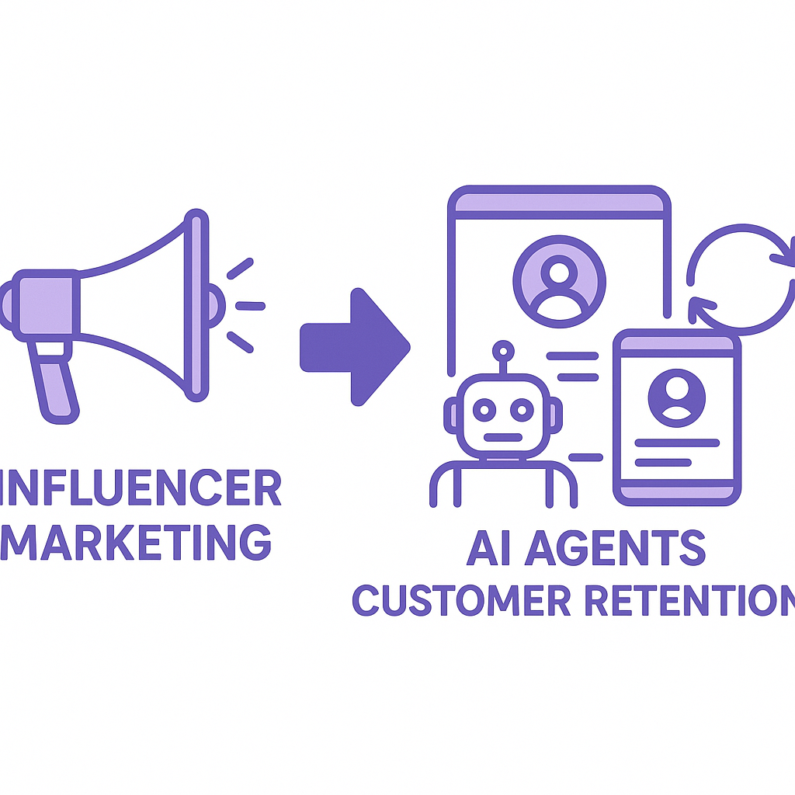

Publishing Recommendation
reviseSeveral drafts contain language that is either hypey or not aligned with our brand voice, and a few risk overstating AI capabilities.
Today's drafts show promise but need refinement to align with our concise and practical brand voice. Some posts overstate AI's capabilities or use hypey language, which should be adjusted to maintain credibility. Ensure claims are backed by evidence and avoid corporate clichés to stay true to our style.
LinkedIn Posts (8)
1. Meta now lets AI agents handle the boring parts of WhatsApp Business setup ★ Purands solution · high priority
CTA: Interested in seeing how this integration can boost your business?
{kind=link}
Image prompt · isometric-flat
Caption: AI streamlining WhatsApp Business setup.
Alternative hooks
- Meta's AI agents just made WhatsApp Business setup a breeze.
- Tired of the manual WhatsApp Business setup? AI has you covered.
- WhatsApp Business setup now takes less time, thanks to AI.
Research behind this post (sources, summaries & confidence)
Meta now lets AI agents handle the boring parts of WhatsApp Business setup conf 0.80 · WhatsApp commerce
The automation of WhatsApp Business setup using AI agents simplifies onboarding and reduces operational load, aligning with the mobile-first and messaging-first commerce strategies prevalent in APAC. This update can enhance the efficiency of businesses leveraging WhatsApp for commerce.
Sources & what I took from each
- AI coding agents can now automate WhatsApp Business setup processes.: The TechCrunch article reports that Meta has introduced AI agents to automate the setup of WhatsApp Business, which reduces the need for manual intervention. ↗ read source
Recent news
- {'title': 'Meta launches AI-driven setup for WhatsApp Business', 'url': 'https://techcrunch.com/2026/09/15/meta-now-lets-ai-agents-handle-the-boring-parts-of-whatsapp-business-setup/'}
Original trend links
Risks / caveats
- Potential over-reliance on AI could lead to issues if the AI fails or encounters unexpected scenarios.
2. Old Navy’s MrBeast deal boosts engagement amid bigger bet on creators ★ Purands solution · high priority
CTA: How do you turn influencer-driven engagement into lasting loyalty?

⬇ Download image{kind=link}
Image prompt · isometric-flat
Caption: From influencers to lasting loyalty.
Alternative hooks
- Old Navy's MrBeast deal isn't just about eyeballs; it's about engagement.
- What happens after an influencer campaign ends?
- Influencer marketing can boost engagement, but what's the long game?
Research behind this post (sources, summaries & confidence)
Old Navy’s MrBeast deal boosts engagement amid bigger bet on creators conf 0.70 · Retention marketing
Utilizing popular creators like MrBeast for marketing campaigns can significantly boost engagement, showing a trend in leveraging influencer marketing for enhanced customer retention.
Sources & what I took from each
- MrBeast campaign shows engagement boost for Old Navy.: Retail Dive reports on the success of Old Navy's marketing strategy involving MrBeast, indicating a measurable increase in engagement. ↗ read source
Recent news
- {'title': 'Old Navy sees engagement rise with MrBeast collaboration', 'url': 'https://www.retaildive.com/news/old-navys-mrbeast-marketing-deal-boosts-engagement/830255/'}
Original trend links
Risks / caveats
- Dependence on influencers could lead to volatility in brand image if the influencer faces negative publicity.
3. The AI graveyard: a running list of projects and startups that didn’t make it
CTA: What lessons have you learned from past project failures?
Alternative hooks
- Every industry has its graveyard, and AI is no exception.
- Why do so many AI projects end up in the graveyard?
- TechCrunch has catalogued the AI projects that didn't make it.
Research behind this post (sources, summaries & confidence)
The AI graveyard: a running list of projects and startups that didn’t make it conf 0.90 · AI startups
Understanding why certain AI projects fail can provide insights into the challenges and pitfalls associated with AI deployment, important for managing risk in AI-driven retention marketing initiatives.
Sources & what I took from each
- Compilation of failed AI projects and startups.: The TechCrunch article provides a detailed list of AI projects that failed, offering insights into frequent issues. ↗ read source
Recent news
- {'title': 'AI project failures catalogued in new report', 'url': 'https://techcrunch.com/2026/09/15/the-ai-graveyard-a-running-list-of-projects-and-startups-that-didnt-make-it/'}
Original trend links
Risks / caveats
- Focusing too much on failures could discourage investment in innovative but risky AI projects.
4. TypeSafe AI raises $40M seed to address AI overconfidence
CTA: How important do you think AI reliability is for business success?
Alternative hooks
- AI overconfidence is costing businesses. TypeSafe AI just raised $40M to fix it.
- What if AI knew its limits? TypeSafe AI is betting $40M it can teach that lesson.
- AI reliability isn't just a buzzword. TypeSafe AI is putting $40M behind it.
Research behind this post (sources, summaries & confidence)
TypeSafe AI raises $40M seed to address AI overconfidence conf 0.80 · AI startups
TypeSafe AI's focus on improving AI reliability addresses a critical challenge in AI deployment. This advancement is significant for businesses using AI in customer data platforms and retention marketing.
Sources & what I took from each
- TypeSafe AI developing models to enhance AI reliability.: The article discusses TypeSafe AI's efforts to create more reliable AI systems, addressing overconfidence, a known issue in AI algorithms. ↗ read source
Recent news
- {'title': 'TypeSafe AI secures $40M to improve AI reliability', 'url': 'https://www.techmeme.com/260915/p51#a260915p51'}
Original trend links
Risks / caveats
- High expectations could lead to disappointment if the technology does not meet performance claims.
5. Meta expands subscription push with new AI-focused plans
CTA: How do you think subscription models are shaping the future of AI tool adoption?
Alternative hooks
- Meta's latest subscription model is betting big on AI.
- AI is at the heart of Meta's new subscription bundles.
- Meta's new AI-focused subscriptions: a game-changer for businesses?
Research behind this post (sources, summaries & confidence)
Meta expands subscription push with new AI-focused plans conf 0.70 · AI industry
Meta's introduction of AI-focused subscription plans suggests a growing market for AI tools among businesses, including those involved in retention marketing. This could lead to enhanced customer engagement and data-driven insights.
Sources & what I took from each
- Meta One bundles offer expanded access to AI tools.: The article indicates that Meta is bundling AI tools into new subscription plans, which could cater to businesses looking for more integrated AI solutions. ↗ read source
Recent news
- {'title': 'Meta introduces AI-focused subscriptions', 'url': 'https://techcrunch.com/2026/09/15/meta-expands-subscription-push-with-new-ai-focused-plans/'}
Original trend links
Risks / caveats
- Subscription fatigue as more companies adopt similar models, potentially overwhelming consumers and businesses with choices.
6. Microsoft AI’s MAI-Transcribe-2 undercuts OpenAI, Google and ElevenLabs on price and speed
CTA: How do you think competitive pricing will impact AI innovation?
Alternative hooks
- Microsoft's latest AI move is all about price.
- What happens when AI transcription becomes affordable?
- Microsoft is setting a new standard in AI pricing.
Research behind this post (sources, summaries & confidence)
Microsoft AI’s MAI-Transcribe-2 undercuts OpenAI, Google and ElevenLabs on price and speed conf 0.70 · AI industry
Microsoft's competitive pricing for AI transcription services could democratize access to advanced AI tools, influencing cost structures in AI-powered customer engagement strategies.
Sources & what I took from each
- Microsoft releases cost-effective AI transcription services.: The article highlights how Microsoft's new transcription service is priced lower than competitors, which could impact market dynamics. ↗ read source
Recent news
- {'title': 'Microsoft AI challenges competitors with new transcription pricing', 'url': 'https://venturebeat.com/infrastructure/microsoft-ais-mai-transcribe-2-undercuts-openai-google-and-elevenlabs-on-price-and-speed'}
Original trend links
Risks / caveats
- Price wars could lead to reduced innovation as companies focus on cost-cutting.
7. AI agents now have a place to snitch
CTA: How do you see AI governance evolving with such measures?
Alternative hooks
- AI's new 'snitch line' is making waves.
- Is AI accountability on the rise?
- AI ethics just got a hotline.
Research behind this post (sources, summaries & confidence)
AI agents now have a place to snitch conf 0.60 · AI industry
The development of an AI Contact Hotline for reporting misbehavior can impact the trust and governance frameworks of AI deployment, which is crucial for businesses relying on AI for customer interactions.
Sources & what I took from each
- Introduction of AI Contact Hotline for reporting issues.: The source discusses the establishment of a hotline to report AI misbehavior, a step towards better transparency and governance. ↗ read source
Recent news
- {'title': 'AI hotline launched for ethical reporting', 'url': 'https://techcrunch.com/2026/09/15/ai-agents-now-have-a-place-to-snitch/'}
Original trend links
Risks / caveats
- Could lead to unnecessary bureaucracy or false reports that complicate AI deployment.
8. Meta prices Muse Voice Transcribe at $0.18 an hour, with real-time diarization for 20+ speakers
CTA: How could real-time transcription change your business operations?
Caption: Meta Muse Voice Transcribe pricing.
Alternative hooks
- Meta's Muse Voice Transcribe costs just $0.18 an hour.
- Affordable, real-time transcription is here.
- 20+ speaker diarization at $0.18 an hour? Yes, really.
Research behind this post (sources, summaries & confidence)
Meta prices Muse Voice Transcribe at $0.18 an hour, with real-time diarization for 20+ speakers conf 0.60 · AI industry
Meta's affordable voice transcription service with advanced features can enhance customer service operations and real-time analytics for businesses in the APAC region.
Sources & what I took from each
- Meta introduces cost-effective voice transcription services.: The source confirms the price and features of Meta's voice transcription service, positioning it as a competitive option. ↗ read source
Recent news
- {'title': "Meta's new transcription service offers advanced features", 'url': 'https://venturebeat.com/technology/meta-prices-muse-voice-transcribe-at-0-18-an-hour-with-real-time-diarization-for-20-speakers-a-steal-for-enterprises'}
Original trend links
Risks / caveats
- Potential saturation of the transcription market could drive down prices further, impacting profit margins.
Today's Trends
| # | Trend | Category | Why it matters |
|---|---|---|---|
| 1 | Meta now lets AI agents handle the boring parts of WhatsApp Business setup
source |
WhatsApp commerce | The automation of WhatsApp Business setup using AI agents simplifies onboarding and reduces operational load, aligning with the mobile-first and messaging-first commerce strategies prevalent in APAC. This update can enhance the efficiency of businesses leveraging WhatsApp for commerce. |
| 2 | Meta expands subscription push with new AI-focused plans
source |
AI industry | Meta's introduction of AI-focused subscription plans suggests a growing market for AI tools among businesses, including those involved in retention marketing. This could lead to enhanced customer engagement and data-driven insights. |
| 3 | AI agents now have a place to snitch
source |
AI industry | The development of an AI Contact Hotline for reporting misbehavior can impact the trust and governance frameworks of AI deployment, which is crucial for businesses relying on AI for customer interactions. |
| 4 | Teens start to trust AI recommendations more than friends, parents
source |
AI industry | The increasing trust of AI recommendations over personal advice among teens highlights a shift in consumer behavior, which could impact retention marketing strategies targeting younger demographics. |
| 5 | TypeSafe AI raises $40M seed to address AI overconfidence
source |
AI startups | TypeSafe AI's focus on improving AI reliability addresses a critical challenge in AI deployment. This advancement is significant for businesses using AI in customer data platforms and retention marketing. |
| 6 | The AI graveyard: a running list of projects and startups that didn’t make it
source |
AI startups | Understanding why certain AI projects fail can provide insights into the challenges and pitfalls associated with AI deployment, important for managing risk in AI-driven retention marketing initiatives. |
| 7 | Microsoft AI’s MAI-Transcribe-2 undercuts OpenAI, Google and ElevenLabs on price and speed
source |
AI industry | Microsoft's competitive pricing for AI transcription services could democratize access to advanced AI tools, influencing cost structures in AI-powered customer engagement strategies. |
| 8 | Meta prices Muse Voice Transcribe at $0.18 an hour, with real-time diarization for 20+ speakers
source |
AI industry | Meta's affordable voice transcription service with advanced features can enhance customer service operations and real-time analytics for businesses in the APAC region. |
| 9 | Customer Data Platforms: identity resolution, segmentation, activation
source |
Customer Data Platforms | Developments in CDP capabilities such as identity resolution and segmentation are crucial for businesses aiming to optimize retention strategies and customer engagement through personalized experiences. |
| 10 | Old Navy’s MrBeast deal boosts engagement amid bigger bet on creators
source |
Retention marketing | Utilizing popular creators like MrBeast for marketing campaigns can significantly boost engagement, showing a trend in leveraging influencer marketing for enhanced customer retention. |
Risk Assessment
- The first post on Meta's AI agents uses 'game-changer,' which is hypey and against brand guidelines.
- The Old Navy post implies AI can single-handedly sustain influencer momentum, which might be misleading.
- The TypeSafe AI post hints at redefining business deployment of AI, potentially overstating impact without evidence.
Suggested LinkedIn Comments (30)
Open each post, then paste the copied comment. Nothing is posted automatically.
1. insight · rss:techcrunch.com — AI isn't some new form of "alien mind," according to Jensen Huang. It's just har
Post by: rss:techcrunch.com
Why it works: The comment acknowledges a pragmatic view of AI, reinforcing the importance of engineering responsibility.
↗ Open LinkedIn post to paste comment2. opinion · rss:techcrunch.com — National outcry against data center construction has spread to Philadelphia, whe
Post by: rss:techcrunch.com
Why it works: It addresses the community concerns and advocates for sustainable development, adding value to the discussion.
↗ Open LinkedIn post to paste comment3. insight · rss:techcrunch.com — A new WhatsApp Business MCP server lets developers use AI coding agents like Cla
Post by: rss:techcrunch.com
Why it works: This comment highlights how the new technology democratizes access to AI, making it relevant to a broader audience.
↗ Open LinkedIn post to paste comment4. respectful challenge · rss:techcrunch.com — From Apple's repeatedly delayed Siri AI to OpenAI's messy "super app" launch, he
Post by: rss:techcrunch.com
Why it works: It points out the discrepancy between expectations and reality, encouraging a more grounded view of AI advancements.
↗ Open LinkedIn post to paste comment5. opinion · rss:techcrunch.com — The AI frenzy could push U.S. data centers to become one of the largest consumer
Post by: rss:techcrunch.com
Why it works: It emphasizes the environmental implications of tech growth, urging for responsible innovation.
↗ Open LinkedIn post to paste comment6. expansion · rss:techcrunch.com — Elon Musk's company will also attempt to deploy the first V3 Starlink satellites
Post by: rss:techcrunch.com
Why it works: The comment expands on the technical achievement by addressing potential challenges, providing a balanced view.
↗ Open LinkedIn post to paste comment7. insight · rss:techcrunch.com — The AI Contact Hotline is designed to be a discreet place where agents that have
Post by: rss:techcrunch.com
Why it works: It focuses on the ethical aspect, adding depth to the conversation about AI implementation.
↗ Open LinkedIn post to paste comment8. opinion · rss:techcrunch.com — This is the first public acknowledgment that the U.S. military put a space weapo
Post by: rss:techcrunch.com
Why it works: It provides a thoughtful take on the implications of militarizing space, emphasizing the need for regulation.
↗ Open LinkedIn post to paste comment9. respectful challenge · rss:techcrunch.com — Meta One bundles expanded access to the company’s AI tools with premium features
Post by: rss:techcrunch.com
Why it works: It praises the innovation while also considering potential privacy issues, providing a nuanced view.
↗ Open LinkedIn post to paste comment10. insight · rss:techcrunch.com — Thatch helps employers keep healthcare costs manageable by offering an individua
Post by: rss:techcrunch.com
Why it works: The comment acknowledges the innovation in employee benefits, highlighting its relevance to modern workforce needs.
↗ Open LinkedIn post to paste comment11. opinion · rss:www.theverge.com — Nearly two years after the last update to Boox's smartphone-sized black-and-whit
Post by: rss:www.theverge.com
Why it works: Acknowledges the product update while critiquing the price point, providing a balanced view.
↗ Open LinkedIn post to paste comment12. insight · rss:www.theverge.com — Canon announced the second-generation of its EOS R8 with a new retro-inspired re
Post by: rss:www.theverge.com
Why it works: Provides a clear reason why the update is beneficial, adding value to the discussion.
↗ Open LinkedIn post to paste comment13. insight · rss:www.theverge.com — Poll data released Tuesday by the New York Times and Siena University confirms w
Post by: rss:www.theverge.com
Why it works: Connects public sentiment to a larger issue, encouraging thoughtful consideration of tech deployment.
↗ Open LinkedIn post to paste comment14. expansion · rss:www.theverge.com — It's been more than two years since the last major Windows event, so Microsoft i
Post by: rss:www.theverge.com
Why it works: Links the event to broader implications, adding depth to the post's information.
↗ Open LinkedIn post to paste comment15. insight · rss:www.theverge.com — Two years ago, social psychologist Jonathan Haidt released his New York Times be
Post by: rss:www.theverge.com
Why it works: Broadens the conversation to the importance of tech balance in daily life.
↗ Open LinkedIn post to paste comment16. insight · rss:www.theverge.com — You may not know it, but minivans are making a comeback in the US. Look around,
Post by: rss:www.theverge.com
Why it works: Connects a trend to societal changes, offering a thoughtful perspective.
↗ Open LinkedIn post to paste comment17. opinion · rss:www.theverge.com — If the high price tag of premium 3D printers have kept you from exploring the ho
Post by: rss:www.theverge.com
Why it works: Highlights the accessibility of the deal, appealing to potential buyers.
↗ Open LinkedIn post to paste comment18. insight · rss:www.theverge.com — Whether you played it in the back of your classroom or on your computer at home,
Post by: rss:www.theverge.com
Why it works: Emphasizes the cultural impact of a well-known game, adding depth to the post.
↗ Open LinkedIn post to paste comment19. insight · rss:www.theverge.com — There are a lot of movies that have tried to seamlessly integrate modern tech -
Post by: rss:www.theverge.com
Why it works: Highlights the intersection of technology and creativity, enriching the discussion.
↗ Open LinkedIn post to paste comment20. respectful challenge · rss:www.theverge.com — More than a decade after its Kickstarter proposed a "cell phone designed to be u
Post by: rss:www.theverge.com
Why it works: Questions a brand's strategic shift, prompting reflection on business decisions.
↗ Open LinkedIn post to paste comment21. insight · rss:feeds.arstechnica.com — The Nancy Grace Roman Space Telescope is the first NASA observatory designed for
Post by: rss:feeds.arstechnica.com
Why it works: It highlights the potential impact of in-space refueling on mission sustainability and flexibility.
↗ Open LinkedIn post to paste comment22. insight · rss:feeds.arstechnica.com — Allegedly fake filmmaker targeted trackers like PassThePopcorn, BroadcasTheNet,
Post by: rss:feeds.arstechnica.com
Why it works: It expands the discussion to the importance of trust and verification in digital spaces.
↗ Open LinkedIn post to paste comment23. opinion · rss:feeds.arstechnica.com — Teen developed acute disseminated encephalomyelitis, a known measles complicatio
Post by: rss:feeds.arstechnica.com
Why it works: It states a clear stance on the importance of vaccination, linking directly to the health issue discussed.
↗ Open LinkedIn post to paste comment24. insight · rss:feeds.arstechnica.com — Reaching orbit would mark a significant milestone.
Post by: rss:feeds.arstechnica.com
Why it works: It provides context on why reaching orbit is a critical achievement in space exploration.
↗ Open LinkedIn post to paste comment25. insight · rss:feeds.arstechnica.com — Robots can start working outside physical cages and without safety barriers.
Post by: rss:feeds.arstechnica.com
Why it works: It connects the technological advance to its practical implications in industrial automation.
↗ Open LinkedIn post to paste comment26. opinion · rss:feeds.arstechnica.com — City: Flock enabled "nationwide lookup" despite contract requiring it to be disa
Post by: rss:feeds.arstechnica.com
Why it works: It provides a clear stance on the importance of maintaining data privacy and contract integrity.
↗ Open LinkedIn post to paste comment27. insight · rss:feeds.arstechnica.com — EV growth is happening, even in the US, and those EVs will need plugs to charge.
Post by: rss:feeds.arstechnica.com
Why it works: It highlights the necessary infrastructure developments required to support the growth in EV adoption.
↗ Open LinkedIn post to paste comment28. respectful challenge · rss:feeds.arstechnica.com — EPA says power plant emissions have no material impact on climate change.
Post by: rss:feeds.arstechnica.com
Why it works: It questions the statement by emphasizing the importance of viewing emissions in their cumulative context.
↗ Open LinkedIn post to paste comment29. insight · rss:feeds.arstechnica.com — The new look debuts in the 2027 Chevrolet Silverado and 2027 GMC Sierra pickup t
Post by: rss:feeds.arstechnica.com
Why it works: It connects the design change to potential shifts in consumer and industry priorities.
↗ Open LinkedIn post to paste comment30. insight · rss:feeds.arstechnica.com — But there may be a price to pay for a quiet Atlantic hurricane season.
Post by: rss:feeds.arstechnica.com
Why it works: It presents an alternative perspective on the implications of a quiet hurricane season, adding depth to the discussion.
↗ Open LinkedIn post to paste comment